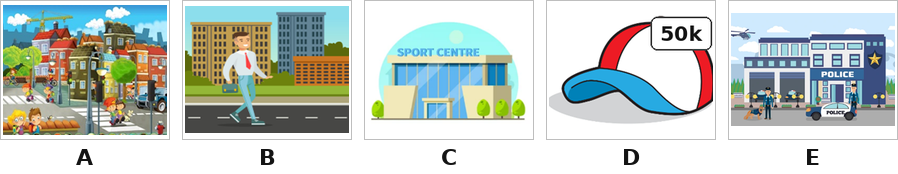
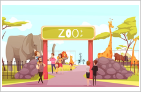
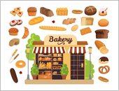
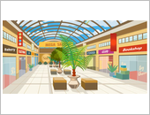
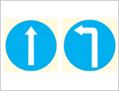

Lucy: Hello. My name is Lucy. I am (0) ______ of my family. We are having dinner. This man is my father. He is a (1) ______. He works very hard at a ______. That woman is my mother. Every Sunday, my mother does (2) ______ at the ______.
Ví dụ (0): A. drawing a picture (Lucy đang vẽ tranh).
Nam: Hi everyone, I am Nam. The weather was (3) ______ yesterday, so we were at a bookshop. It is next to the pet shop. My sister bought some books. It is (4) ______ dong. We had a lot of fun.
Good morning, everyone! My name is Thuy Duong. I get up at six thirty (0) in the morning. I go to school at seven thirty. I have lunch at school with my classmates at noon. I go home at (1) ______. I help my mom (2) ______ in the evening. We have dinner at seven o’clock. After dinner, I (3) ______. I go to bed at nine thirty. Can you tell me about your daily routines?
Hello, I’m Harry. It is sunny today. I and my family are at the zoo. I and my sister like the animals at the zoo. Look! They are lions. I like them because they roar loudly. These are hippos. They are swimming in the pond. I can see two giraffes. They are running very quickly on the field. My sister, Linda, likes birds because they sing merrily. She can see a couple of peacocks. She likes them because they dance beautifully. We have a lot of fun at the zoo!




Nhập thông tin để hệ thống ghi nhận kết quả.
Bạn có thêm 5 phút để hoàn tất. Hết 5 phút bài sẽ tự động nộp.
Hành vi này đã được ghi nhận. Hãy quay lại chế độ toàn màn hình để tiếp tục làm bài.